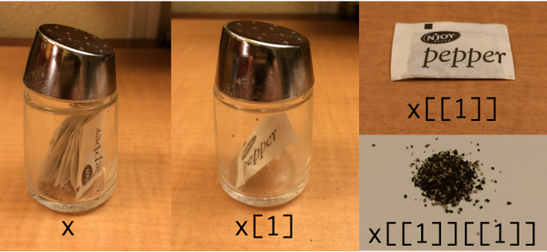

RT <- c(420, 619, 550, 521, 1003, 486, 512, 560, 495, 610)13. Data types in R
He divided the universe in forty categories or classes, these being further subdivided into differences, which was then subdivided into species. He assigned to each class a monosyllable of two letters; to each difference, a consonant; to each species, a vowel. For example:
de, which means an element;deb, the first of the elements, fire;deba, a part of the element fire, a flame. … The words of the analytical language created by John Wilkins are not mere arbitrary symbols; each letter in them has a meaning, like those from the Holy Writ had for the Cabbalists.
–Jorge Luis Borges, The Analytical Language of John Wilkins
1 Factors
As psychological research methodology classes are at pains to point out, the data we analyse come in different kinds. Some variables are inherently quantitative in nature: response time (RT) for instance, has a natural interpretation in units of time. So when I defined a response time variable in the previous section, I used a numeric vector. To keep my variable names concise, I’ll define the same variable again using the conventional RT abbreviation:
A response time of 1500 milliseconds is indeed 400 milliseconds slower than a response time of 1100 milliseconds, so addition and subtraction are meaningful operations. Similarly, 1500 milliseconds is twice as long as 750 milliseconds, so multiplication and division are also meaningful. That’s not the case for other kinds of data, and this is where factors can be useful…
1.1 Unordered factors
Some variables are inherently nominal in nature. If I recruit participants in an online experiment I might see that their place of residence falls in one of several different regions. For simplicity, let’s imagine that my study is designed to sample people from one of four distinct geographical regions: the United States, India, China or the European Union, which I’ll represent using the codes "us", "in", "ch" and "eu". My first thought would be to represent the data using a character vector:
region_raw <- c("us","us","us","eu","in","eu","in","in","us","in")This seems quite reasonable, but there’s a problem: as it happens there is nobody from China in this sample. So if I try to construct a frequency table of these data – which I can do using the table() function in R – the answer I get omits China entirely:
table(region_raw)region_raw
eu in us
2 4 4 Intuitively it feels like there should be a fourth entry here, indicating that we have 0 participants from China. R has a natural tool for representing this idea, called a factor. First, we’ll create a new variable using the factor() function that contains the same information but represents it as a factor:
region <- factor(region_raw)
region [1] us us us eu in eu in in us in
Levels: eu in usThis looks a much the same, and not surprisingly R still doesn’t know anything about the possibility of participants from China. However, notice that the bottom of the output lists the levels of the factor. The levels of a factor specify the set of values that variable could have taken. By default, factor() tries to guess the levels using the raw data, but we can override that manually, like this:
region <- factor(region_raw, levels = c("ch","eu","in","us"))
region [1] us us us eu in eu in in us in
Levels: ch eu in usNow when we tabulate the region variable, we obtain the right answer:
table(region)region
ch eu in us
0 2 4 4 Much nicer.
1.2 Ordered factors
There are two different types of factor in R. Until now we have been discussing unordered factors, in which the categories are purely nominal and there is no notion that the categories are arranged in any particular order. However, many psychologically important variables are inherently ordinal. Questionnaire responses often take this form, where participants might be asked to endorse a proposition using verbal categories such as “strongly agree”, “agree”, “neutral”, “disagree” and “strongly disagree”. The five response categories can’t be given any sensible numerical values1 but they can be ordered in a sensible fashion. In this situation we may want to represent the responses as an ordered factor.
To give you a sense of how these work in R, suppose we’ve been unfortunate enough to be given a data set that encodes ordinal responses numerically. In my experience that happens quite often. Let’s suppose the original survey asked people how strongly they supported a polticial policy. Here we have a variable consisting of Likert scale data, where (let’s suppose) in the original questionnaire 1 = “strongly agree” and 7 = “strongly disagree”,
support_raw <- c(1, 7, 3, 4, 4, 4, 2, 6, 5, 5)We can convert this to an ordered factor by specifying ordered = TRUE when we call the factor() function, like so:
support <- factor(
x = support_raw, # the raw data
levels = c(7,6,5,4,3,2,1), # strongest agreement is 1, weakest is 7
ordered = TRUE # and it’s ordered
)
support [1] 1 7 3 4 4 4 2 6 5 5
Levels: 7 < 6 < 5 < 4 < 3 < 2 < 1Notice that when we print out the ordered factor, R explicitly tells us what order the levels come in.
Because I wanted to order my levels in terms of increasing strength of endorsement, and because a response of 1 corresponded to the strongest agreement and 7 to the strongest disagreement, it was important that I tell R to encode 7 as the lowest value and 1 as the largest. Always check this when creating an ordered factor: it’s very easy to accidentally encode your data with the levels reversed if you’re not paying attention. In any case, note that we can (and should) attach meaningful names to these factor levels by using the levels function, like this:
levels(support) <- c(
"strong disagree", "disagree", "weak disagree",
"neutral", "weak agree", "agree", "strong agree"
)
support [1] strong agree strong disagree weak agree neutral
[5] neutral neutral agree disagree
[9] weak disagree weak disagree
7 Levels: strong disagree < disagree < weak disagree < ... < strong agreeA nice thing about ordered factors is that some analyses in R automatically treat ordered factors differently to unordered factors, and generally in a way that is more appropriate for ordinal data.
2 Data frames
We now have three variables that we might plausibly have encountered as the result of some study, region, support and RT.2 At the moment, R has no understanding of how these variables are related to each other. Quite likely they’re ordered the same way, so that the data stored in region[1], support[1] and RT[1] all come from the same person. That would be sensible, but R is a robot 🤖 and does not possess common sense. To help a poor little robot out (and to make our own lives easier), it’s nice to organise these three variable into a tabular format. We saw this in the last section, in which the AFL data was presented as a table. This is where data frames – and the tidyverse analog tibbles – are very useful.
2.1 Making a data frame
So how do we create a data frame (or tibble)? One way we’ve already seen: if we import our data from a CSV file, R will create one for you. A second method is to create a data frame directly from some existing variables using the data.frame function. In real world data analysis this method is less common, but it’s very helpful for understanding what a data frame actually is, so that’s what we’ll do in this section.
Manually constructing a data frame is simple. All you have to do when calling data.frame is type a list of variables that you want to include in the data frame. If I want to store the variables from my experiment in a data frame called dat I can do so like this:
dat <- data.frame(region, support, RT)
dat region support RT
1 us strong agree 420
2 us strong disagree 619
3 us weak agree 550
4 eu neutral 521
5 in neutral 1003
6 eu neutral 486
7 in agree 512
8 in disagree 560
9 us weak disagree 495
10 in weak disagree 610Note that dat is a self-contained variable. Once created, it no longer depends on the variables from which it was constructed. If we make changes to the original RT variable, these will not influence the copy in dat (or vice versa). So for the sake of my sanity I’m going to remove all the originals:
rm(region_raw, region, support_raw, support, RT)
who() -- Name -- -- Class -- -- Size --
dat data.frame 10 x 3 As you can see, our workspace has only a single variable, a data frame called dat. In this example I constructed the data frame manually so that you can see how a data frame is built from a set of variables, but in most real life situations you’d probably load your data frame directly from a CSV file or similar.
2.2 Making a tibble
Constructing a tibble from raw variables is essentially the same as constructing a data frame, and the function we use to do this is tibble. If I hadn’t deleted all the raw variables in the previous section, this command would work:
tib <- tibble(region, support, RT)Alas they are gone, and I will have to try a different method. Fortunately, I can coerce my existing data frame dat into a tibble using the as_tibble() function, and use it to create a tibble called tib. I’m very imaginative 😀
tib <- as_tibble(dat)
tib# A tibble: 10 × 3
region support RT
<fct> <ord> <dbl>
1 us strong agree 420
2 us strong disagree 619
3 us weak agree 550
4 eu neutral 521
5 in neutral 1003
6 eu neutral 486
7 in agree 512
8 in disagree 560
9 us weak disagree 495
10 in weak disagree 610Coercion is an important R concept, and one that we’ll talk about again at the end of this section. In the meantime, there are some nice things to note about the output when we print tib. It states that the variable is a tibble with 10 rows and 3 columns. Underneath the variable names it tells you what type of data they store: region is a factor (<fct>), support is an ordered factor (<ord>) and RT is numeric (<dbl>, short for “double”)3.
2.3 Tibbles are data frames
Under the hood, tibbles are essentially the same thing as data frames and are designed to behave the same way. In fact, if we use the class() function to see what R thinks tib really is…
class(tib)[1] "tbl_df" "tbl" "data.frame"… it agrees that in addition to being a tibble, tib is also a data frame! We can check this more directly using the is.data.frame() function:
is.data.frame(tib)[1] TRUEThat being said, there are one or two differences between tibbles and pure data frames. For the most part, my impression has been that whenever they differ, the behaviour of tibbles tends to be more intuitive. With this in mind, although I’ll tend to use the terms “data frame” and “tibble” interchangeably in these notes, for the rest of these notes I’m going to work with tibbles like tib rather than pure data frames like dat.
2.4 Using the $ operator
At this point our workspace contains a data frame called dat, a tibble called tib, but no longer contains the original variables. That’s okay because the tibble (data frame) is acting as a container that keeps them in a nice tidy rectangular shape. Conceptually this is very nice, but now we have a practical question … how do we get information out again? There are two qualitatively different ways to do this,4 reflecting two different ways to think about your data:
- Your data set is a list of variables (…use
$) - Your data set is a table of values (…use
[ ])
Both perspectives are valid, and R allows you to work with your data both ways.
To start with, let’s think of tib as a list of variables. This was the perspective we took when constructing dat in the first place: we took three different vectors (region, support, RT) and bound them together into a data frame, which we later coerced into the tibble tib. From this perspective, what we want is an operator that will extract one of those variables for us. This is the role plaed by $. If I want to refer to the region variable contained within the tib tibble, I would use this command:
tib$region [1] us us us eu in eu in in us in
Levels: ch eu in usAs you can see, the output looks exactly the same as it did for the original variable: tib$region is a vector (an unordered factor in this case), and we can refer to an element of that vector in the same way we normally would:
tib$region[1][1] us
Levels: ch eu in usConceptually, the metaphor here is dataset$variable[value]. The table below illustrates this by showing what type of output you get with different commands:
| data frame command | data frame output | tibble command | tibble output |
|---|---|---|---|
| dat | data frame | tib | tibble |
| dat\(RT |vector |tib\)RT | vector | ||
| dat\(RT[1] |element |tib\)RT[1] | element |
As you can see, the $ operator works the same way for pure data frames as for tibbles. This is not quite the case for when using square brackets [ ], as the next section demonstrates…
2.5 Using square brackets
The second way to think about a tibble is to treat it as a fancy table. There is something appealing about this, because it emphasises the fact that the data set has a case by variable structure:
tib# A tibble: 10 × 3
region support RT
<fct> <ord> <dbl>
1 us strong agree 420
2 us strong disagree 619
3 us weak agree 550
4 eu neutral 521
5 in neutral 1003
6 eu neutral 486
7 in agree 512
8 in disagree 560
9 us weak disagree 495
10 in weak disagree 610In this structure each row is a person, and each column is a variable. The square bracket notation allows you to refer to entries in the data set by their row and column number (or name). As such, the reference looks like this:
dataset[row,column]R allows you to select multiple rows and colummns. For instance if you set row to be 1:3 then R will return the first three cases. Here is an example where we select the first three rows and the first two columns:
tib[1:3, 1:2]# A tibble: 3 × 2
region support
<fct> <ord>
1 us strong agree
2 us strong disagree
3 us weak agree If we omit values for the rows (or columms) while keeping the comma then R will assume you want all rows (or colummns). So this returns every row in tib but only the first two columns:
tib[, 1:2]# A tibble: 10 × 2
region support
<fct> <ord>
1 us strong agree
2 us strong disagree
3 us weak agree
4 eu neutral
5 in neutral
6 eu neutral
7 in agree
8 in disagree
9 us weak disagree
10 in weak disagree An important thing to recognise here is that – for tibbles – the metaphor underpinning the square bracket system is that your data have a rectangular shape that is imposed by the fact that your variable is a tibble, and no matter what you do with the square brackets the result will always remain a tibble. If I select just one row…
tib[5,]# A tibble: 1 × 3
region support RT
<fct> <ord> <dbl>
1 in neutral 1003the result is a tibble. If I select just one column…
tib[,3]# A tibble: 10 × 1
RT
<dbl>
1 420
2 619
3 550
4 521
5 1003
6 486
7 512
8 560
9 495
10 610the result is a tibble. Even if I select a single value…
tib[5,3]# A tibble: 1 × 1
RT
<dbl>
1 1003the result is a tibble. For the square bracket system the rule is very simple: tibbles stay tibbles
Annoyingly, this is not the case for a pure data frame like dat. For a pure data frame, any time it is possible for R to treat the result as something else, it does: if I were to use the same commands for the data frame dat, the results would be different in some cases. This has caused my students (and myself) no end of frustration over the years because everyone forgets about this particular property of data frames and stuff breaks. In the original version of these notes published in Learning Statistics with R I had a length explanation of this behaviour. Nowadays I just encourage people to use tibbles instead. For what it’s worth, if you are working with pure data frames, here’s a summary of what to expect:
| data frame command | data frame output | tibble command | tibble output |
|---|---|---|---|
| dat[1,1] | element | tib[1,1] | tibble |
| dat[1,] | data frame | tib[1,] | tibble |
| dat[,1] | vector | tib[,1] | tibble |
| dat[2:3,] | data frame | tib[2:3,] | tibble |
| dat[,2:3] | data frame | tib[,2:3] | tibble |
I like tibbles.5
3 Matrices
Data frames and tibbles are mostly used to describe data that take the form of a case by variable structure: each row is a case (e.g., a participant) and each column is a variable (e.g., measurement). Case by variable structures are fundamentally asymmetric because the rows and columns have qualitatively different meaning. Two participants who provide data will always provide data in the same format (if they don’t then you can’t organise the data this way), but two variables can be different in many different ways: one column might be numeric, another is a factor, yet another might contains dates. Many psychological data sets have this characteristic. Others do not, so it is worth talking about a few other data structures that arise quite frequently!
Much like a data frame, a matrix is basically a big rectangular table of data, and there are similarities between the two. However, matrices treat columns and rows in the same fashion, and as a consequence every entry in a matrix has to be of the same type (e.g. all numeric, all character, etc). Let’s create a matrix using the row bind function, rbind, which combines multiple vectors in a row-wise fashion:
row1 <- c(2, 3, 1) # create data for row 1
row2 <- c(5, 6, 7) # create data for row 2
mattie <- rbind(row1, row2) # row bind them into a matrix
mattie [,1] [,2] [,3]
row1 2 3 1
row2 5 6 7Notice that when we bound the two vectors together R turned the names of the original variables into row names.6 To keep things fair, let’s add some exciting column names as well:
colnames(mattie) <- c("col1", "col2", "col3")
mattie col1 col2 col3
row1 2 3 1
row2 5 6 73.1 Matrix indexing
You can use square brackets to subset a matrix in much the same way that you can for data frames, again specifying a row index and then a column index. For instance, mattie[2,3] pulls out the entry in the 2nd row and 3rd column of the matrix (i.e., 7), whereas mattie[2,] pulls out the entire 2nd row, and mattie[,3] pulls out the entire 3rd column. However, it’s worth noting that when you pull out a column, R will print the results horizontally, not vertically.7
mattie[2,]col1 col2 col3
5 6 7 mattie[,3]row1 row2
1 7 This can be a little confusing for novice users: because it is no longer a two dimensional object R treats the output as a regular vector.8
3.2 Matrices vs data frames
As mentioned above difference between a data frame and a matrix is that, at a fundamental level, a matrix really is just one variable: it just happens that this one variable is formatted into rows and columns. If you want a matrix of numeric data, every single element in the matrix must be a number. If you want a matrix of character strings, every single element in the matrix must be a character string. If you try to mix data of different types together, then R will either complain or try to transform the matrix into something unexpected. To give you a sense of this, let’s do something silly and convert one element of mattie from the number 5 to the character string "five"…
mattie[2,2] <- "five"
mattie col1 col2 col3
row1 "2" "3" "1"
row2 "5" "five" "7" Oh no I broke mattie – she’s all text now! I’m so sorry mattie, I still love you ❤️
3.3 Other ways to make a matrix
When I created mattie I used the rbind command. Not surprisingly there is also a cbind command that combines vectors column-wise rather than row-wise. There is also a matrix command that you can use to specify a matrix directly:
matrix(
data = 1:12, # the values to include in the matrix
nrow = 3, # number of rows
ncol = 4 # number of columns
) [,1] [,2] [,3] [,4]
[1,] 1 4 7 10
[2,] 2 5 8 11
[3,] 3 6 9 12The result is a \(3\times 4\) matrix of the numbers 1 to 12, listed column-wise.9 If you need to create a matrix row-wise, you can specify byrow = TRUE when calling matrix().
4 Arrays
When doing data analysis, we often have reasons to want to use higher dimensional tables (e.g., sometimes you need to cross-tabulate three variables against each other). You can’t do this with matrices, but you can do it with arrays. An array is just like a matrix, except it can have more than two dimensions if you need it to. In fact, as far as R is concerned a matrix is just a special kind of array, in much the same way that a data frame is a special kind of list. I don’t want to talk about arrays too much, but I will very briefly show you an example of what a three dimensional array looks like.
arr <- array(
data = 1:24,
dim = c(3,4,2)
)
arr, , 1
[,1] [,2] [,3] [,4]
[1,] 1 4 7 10
[2,] 2 5 8 11
[3,] 3 6 9 12
, , 2
[,1] [,2] [,3] [,4]
[1,] 13 16 19 22
[2,] 14 17 20 23
[3,] 15 18 21 24Of course, calling an array arr just makes me think of pirates ☠️.
4.1 Array indexing
Array indexing is a straightforward generalisation of matrix indexing, so the same logic applies. Since arr is a three-dimensional \(3 \times 4 \times 2\) array, we need three indices to specify an element:
arr[2,3,1][1] 8Omitted indices have the same meaning that they have for matrices, so arr[,,2] is a two dimensional slice through the array, and as such R recognises it as a matrix even though the full three dimensional array arr does not count as one.10 Here’s what arr[,,2] returns:
arr[,,2] [,1] [,2] [,3] [,4]
[1,] 13 16 19 22
[2,] 14 17 20 23
[3,] 15 18 21 244.2 Array names
As with other data structures, arrays can have names for specific elements. In fact, we can assign names to each of the dimensions too. For instance, suppose we have another array – that we affectionately call cubie 🗳 – it is also a three dimensional array, but that has the shape that it does because it represents a (3 genders) \(\times\) (4 seasons) \(\times\) (2 times) structure. We could specify the dimension names for cubie like this:
cubie <- array(
data = 1:24,
dim = c(3,4,2),
dimnames = list(
"genders" = c("male", "female", "nonbinary"),
"seasons" = c("summer", "autumn", "winter", "spring"),
"times" = c("day", "night")
)
)
cubie, , times = day
seasons
genders summer autumn winter spring
male 1 4 7 10
female 2 5 8 11
nonbinary 3 6 9 12
, , times = night
seasons
genders summer autumn winter spring
male 13 16 19 22
female 14 17 20 23
nonbinary 15 18 21 24I find the output for cubie easier to read than the one for arr – it’s usually a good idea to label your arrays! Plus, it makes it a little easier to extract information from them too, since you can refer to elements by names. So if I just wanted to take a slice through the array corresponding to the "nonbinary" values, I could do this:
cubie["nonbinary",,] times
seasons day night
summer 3 15
autumn 6 18
winter 9 21
spring 12 245 Lists
The next kind of data I want to mention are lists. Lists are an extremely fundamental data structure in R, and as you start making the transition from a novice to a savvy R user you will use lists all the time. Most of the advanced data structures in R are built from lists (e.g., data frames are actually a specific type of list), so it’s useful to have a basic understanding of them.
Okay, so what is a list, exactly? Like data frames, lists are just “collections of variables.” However, unlike data frames – which are basically supposed to look like a nice “rectangular” table of data – there are no constraints on what kinds of variables we include, and no requirement that the variables have any particular relationship to one another. In order to understand what this actually means, the best thing to do is create a list, which we can do using the list function. If I type this as my command:
starks <- list(
parents = c("Eddard", "Catelyn"),
children = c("Robb", "Jon", "Sansa", "Arya", "Brandon", "Rickon"),
alive = 8
)I create a list starks that contains a list of the various characters that belong to House Stark in George R. R. Martin’s A Song of Ice and Fire novels. Because Martin does seem to enjoy killing off characters, the list starts out by indicating that all eight are currently alive (at the start of the books obviously!) and we can update it if need be. When a character dies, I might do this:
starks$alive <- starks$alive - 1
starks$parents
[1] "Eddard" "Catelyn"
$children
[1] "Robb" "Jon" "Sansa" "Arya" "Brandon" "Rickon"
$alive
[1] 7I can delete whole variables from the list if I want. For instance, I might just give up on the parents entirely:
starks$parents <- NULL
starks$children
[1] "Robb" "Jon" "Sansa" "Arya" "Brandon" "Rickon"
$alive
[1] 7You get the idea, I hope. The key thing with lists is that they’re flexible. You can construct a list to map onto all kinds of data structures and do cool things with them. At a fundamental level, many of the more advanced data structures in R are just fancy lists.
5.1 Indexing lists
In the example above we used $ to extract named elements from a list, in the same fashion that we would do for a data frame or tibble. It is also possible to index a list using square brackets, though it takes a little effort to get used to. The elements of a list can be extracted using single brackets (e.g., starks[1]) or double brackets (e.g., starks[[1]]). To see the difference between the two, notice that the single bracket version returns a list containing only a single vector
starks[1]$children
[1] "Robb" "Jon" "Sansa" "Arya" "Brandon" "Rickon" This output is a list that contains one vector starks$children. In contrast, the double bracketed version returns the children vector itself:
starks[[1]][1] "Robb" "Jon" "Sansa" "Arya" "Brandon" "Rickon" If this seems complicated and annoying… well, yes. Yes it is!
I find it helps me to think of the list as a container. When we use single brackets, the result is still inside its container; when we use double brackets we remove it from the container. This intuition is illustrated nicely in the image below, tweeted by Hadley Wickham:

In this example x is a container (list) containing many pepper sachets (elements). When we type x[1] we keep only one of the sachets of pepper, but it’s still inside the container. When we type x[[1]] we take the sachet out of the container.
The final panel highlights how lists can become more complicated.11 Lists are just fancy containers, and there’s no reason why lists can’t contain other lists. In the pepper shaker scenario, if each sachet is itself a list, we would need to type x[[1]][[1]] to extract the tasty, tasty pepper! 🌶
6 Dates
Dates (and time) are very annoying types of data. To a first approximation we can say that there are 365 days in a year, 24 hours in a day, 60 minutes in an hour and 60 seconds in a minute, but that’s not quite correct. The length of the solar day is not exactly 24 hours, and the length of solar year is not exactly 365 days, so we have a complicated system of corrections that have to be made to keep the time and date system working. On top of that, the measurement of time is usually taken relative to a local time zone, and most (but not all) time zones have both a standard time and a daylight savings time, though the date at which the switch occurs is not at all standardised. So, as a form of data, times and dates are just awful to work with. Unfortunately, they’re also important. Sometimes it’s possible to avoid having to use any complicated system for dealing with times and dates. Often you just want to know what year something happened in, so you can just use numeric data: in quite a lot of situations something as simple as declaring that this_year is 2026, and it works just fine. If you can get away with that for your application, this is probably the best thing to do. However, sometimes you really do need to know the actual date. Or, even worse, the actual time. In this section, I’ll very briefly introduce you to the basics of how R deals with date and time data. As with a lot of things in this chapter, I won’t go into details: the goal here is to show you the basics of what you need to do if you ever encounter this kind of data in real life. And then we’ll all agree never to speak of it again.
To start with, let’s talk about the date. As it happens, modern operating systems are very good at keeping track of the time and date, and can even handle all those annoying timezone issues and daylight savings pretty well. So R takes the quite sensible view that it can just ask the operating system what the date is. We can pull the date using the Sys.Date function:
today <- Sys.Date() # ask the operating system for the date
print(today) # display the date[1] "2026-07-23"Okay, that seems straightforward. But, it does rather look like today is just a character string, doesn’t it? That would be a problem, because dates really do have a quasi-numeric character to them, and it would be nice to be able to do basic addition and subtraction with them. Well, fear not. If you type in class(today), R will tell you that the today variable is a "Date" object. What this means is that, hidden underneath this text string, R has a numeric representation.12 What that means is that you can in fact add and subtract days. For instance, if we add 1 to today, R will print out the date for tomorrow:
today + 1[1] "2026-07-24"Let’s see what happens when we add 365 days:
today + 365[1] "2027-07-23"R provides a number of functions for working with dates, but I don’t want to talk about them in any detail, other than to say that the lubridate package (part of the tidyverse) makes things a lot easier than they used to be. A little while back I wrote a blog post about lubridate and may fold it into these notes one day.
7 Coercion
Sometimes you want to change the variable class. Sometimes when you import data from files, it can come to you in the wrong format: numbers sometimes get imported as text, dates usually get imported as text, and many other possibilities besides. Sometimes you might want to convert a data frame to a tibble or vice versa. Changing the variable in this way is called coercion, and the functions to coerce variables are usually given names like as.numeric(), as.factor(), as_tibble() and so on. We’ve seen some explicit examples in this chapter:
- Coercing a data frame to a tibble
- Coercing a character vector to a factor
There are many other possibilities. A common situation requiring coercion arises when you have been given a variable x that is supposed to be representing a number, but the data file that you’ve been given has encoded it as text.
x <- c("15","19") # the variable
class(x) # what class is it?[1] "character"Obviously, if I want to do mathematical calculations using x in its current state R wil get very sad 😿. It thinks x is text and it won’t allow me to do mathematics with text! To coerce x from “character” to “numeric”, we use the as.numeric function:
x <- as.numeric(x) # coerce the variable
class(x) # what class is it?[1] "numeric"x + 1 # hey, addition works![1] 16 20Not surprisingly, we can also convert it back again if we need to. The function that we use to do this is the as.character function:
x <- as.character(x) # coerce back to text
class(x) # check the class[1] "character"There are of course some limitations: you can’t coerce "hello world" into a number because there isn’t a number that corresponds to it. If you try, R metaphorically shrugs its shoulders and declares it to be missing:
x <- c("51", "hello world")
as.numeric(x)Warning: NAs introduced by coercion[1] 51 NAMakes sense I suppose!
Another case worth talking about is how R handles coercion with logical variables. Coercing text to logical data using as.logical() is mostly intuitive. The strings "T", "TRUE", "True" and "true" all convert to TRUE, whereas "F", "FALSE", "False", and "false" all become FALSE. All other strings convert to NA. When coercing from logical to test using as.character, TRUE converts to "TRUE" and FALSE converts to "FALSE".
Converting numeric values to logical data – again using as.logical – is similarly straightforward. Following the standard convention in the study of Boolean logic 0 coerces to FALSE. Everything else is TRUE. When coercing logical to numeric, FALSE converts to 0 and TRUE converts to 1.
Footnotes
For example, suppose we decide to assign them the numbers 1 to 5. If we take these numbers literally, we’re implicitly assuming that is the psycholigical difference between “strongly agree” and “neutral” is the same in “size” as the difference between “agree” and “disagree”. In many situations this is probably okay to a first approximation, but in general it feels very strange.↩︎
Admittedly it would be a strange study that produced only these three variables, but I hope you’ll forgive the lack of realism on this point.↩︎
The origin of the term “double” comes from double precision floating point the format in which numeric variables are represented internally↩︎
Technically this is a lie: there are many more ways to do this, but let’s not make this any more difficult than it needs to be, yeah?↩︎
Just FYI: you can make a pure data frame behave like a tibble. If you use
dat[,1,drop=FALSE]you can suppress this weird thing and make R return a one-column data frame instead of a vector, but that command is so unbearably cumbersome that everyone forgets to use it.↩︎We could delete these if we wanted by typing
rownames(mattie)<-NULL, but I generally prefer having meaningful names attached to my variables, so I’ll keep them.↩︎The reason for this relates to how matrices are implemented. The original matrix
mattieis treated as a two-dimensional object, containing two rows and three columns. However, whenever you pull out a single row or a single column, the result is considered to be a vector, which has a length but doesn’t have dimensions. Unless you explictly coerce the vector into a matrix, R doesn’t really distinguish between row vectors and column vectors. This has implications for how matrix algebra is implemented in R (which I’ll admit I initially found odd). When multiplying a matrix by a vector using the%*%operator, R will attempt to interpret the vector as either a row vector or column vector, depending on whichever one makes the multiplication work. That is, suppose \(\mathbf{M}\) is \(2\times 3\) matrix, and \(v\) is a \(1\times 3\) row vector. Mathematically the matrix multiplication \(\mathbf{M}v\) doesn’t make sense since the dimensions don’t conform, but you can multiply by the corresponding column vector, \(\mathbf{M}v^T\). So, if I setv <- mattie[2,], the object that R returns doesn’t technically have any dimensions only a length. So even thoughvwas behaving like a row vector when it was part ofmattie, R has forgotten that completely and only knows thatvis length three. So when I try to calculatemattie %*% v, which you’d think would fail because I didn’t transposev, it actually works. In this context R treatedvas if it were a column vector for the purposes of matrix multiplication. Note that if both objects are vectors, this leads to ambiguity since \(vv^T\) (inner product) and \(v^Tv\) (outer product) yield different answers. In this situationv %*% vreturns the inner product. You can obtain the outer product withouter(v,v). The help documentation may come in handy!↩︎You can suppress this behaviour by using a command like
mattie[,3,drop=FALSE]. It’s unpleasant though. Also be warned: data frames do this too when you select one column using square brackets. Tibbles don’t. One of the reasons I like tibbles actually.↩︎I won’t go into details, but note that you can refer the elements of a matrix by specifying only a single index. For a \(3\times 4\) matrix
M,M[2,2]andM[5]refer to the same cell. This method of indexing assumes column-wise ordering regardless of whether the matrixMwas originally created in column-wise or row-wise fashion.↩︎To see this, compare
is.matrix(arr)tois.matrix(arr[,,2])↩︎Speaking of complications… Under the hood, data frames and tibbles are secretly lists, so you can use the list indexing methods for them and so, for example,
dat[[3]]is the same asdat$RT. Probably best not to worry too much about that detail right now 😬↩︎Date objects are coded internally as the number of days that have passed since January 1, 1970.↩︎